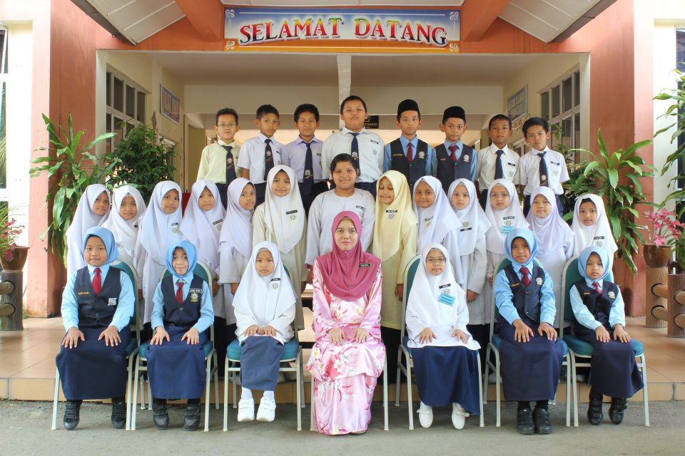
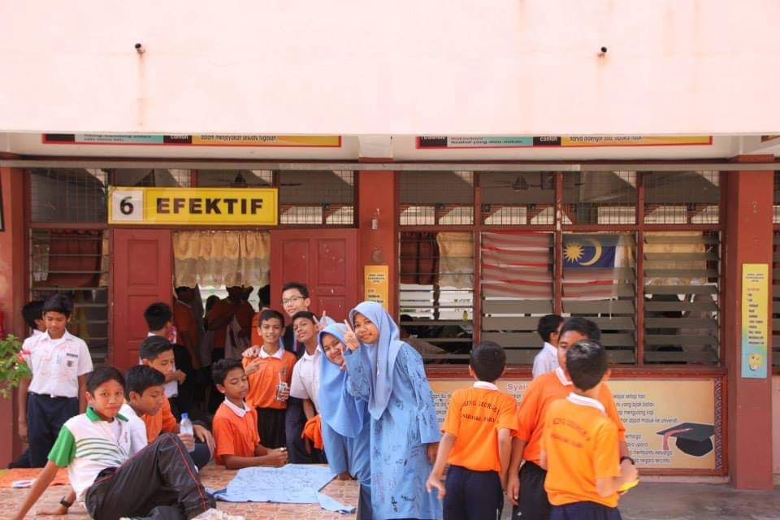
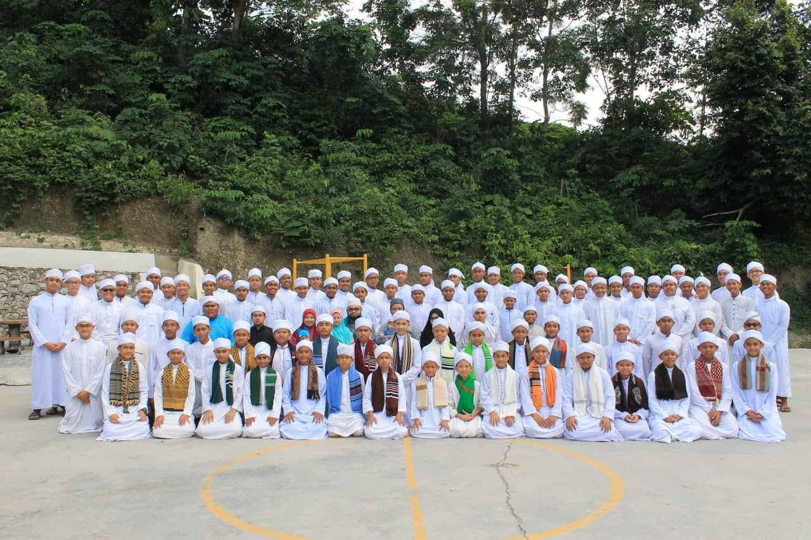
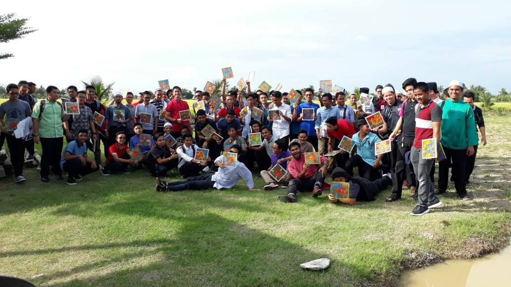
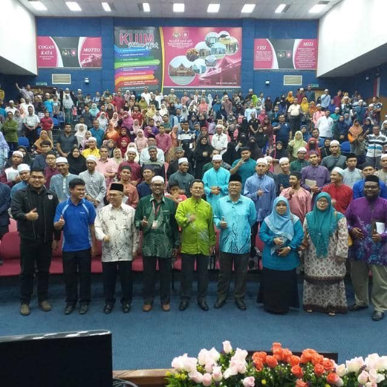

| Sekolah Kebangsaan Panchor is my first primary school. I stay in my first house when I enter this school. I go to school by van and the distance between this school with my house is around 10 minutes. It's quite fun to go to school by van and spend time with friends either on the way to school or way back home. When I was 9 years old, I have been selected to representing our school in "Dikir Arab", it's similar to "Dikir Barat" but it using the Arabic language. I only spent 4 years study here which is standard 1 until standard 4 because my family moving to a new house. |

| After I move to a new house, I also move to another school named Sekolah Kebangsaan King George V.I move because the school is closer to my house, it is literally behind my house so I just walk to school. It's a little bit exhausting at first but it is fun because I can spend more time with my friends before and after school. My friends hang out at my house every day after school, we have a lot of fun. I got 8A for my KAFA examination and 4A and 1B during my UPSR. In this school I was selected to representing the school in football and softball, both are during my standard 5 and standard 6. |

| After finishing my primary school, I enter Madrasah Al-Qurra' which is located in Alor Gajah, Melaka when I was 13 years old. I chose madrasah as my secondary school because I love to memorize things back then. I spent 3 years here which from form 1 until form 3 even though I do not finish memorizing Al-Quran. It was a great experience to study in that environment. I also play futsal there, we often have a friendly match with madrasah near ours named Baitul Qurra'. |

| I enter Smart Tahfiz UNISEL when I was 16 years old, it's located at the University of Selangor, Kuala Selangor branch. The reason I move to Smart Tahfiz is I want to take SPM there, they offer a fast track SPM which means students only study for around 11 months until 2 years then will take SPM.It's fun to study there because of the environment, it feels like you are studying in a high-standard place. I study there for only 1 year and did not take my SPM due to my age. |

| Tahfiz Bestari Kolej Universiti Islam Melaka is located in Masjid Tanah Melaka, it's also a place that offers students who are graduated from tahfiz to take SPM. The environment here is also quite fun because it's an Islamic institution so as a student that has an experience with it, I love it. I study there for 11 months and I score 2A, 3B, and 2C during my SPM examination. |